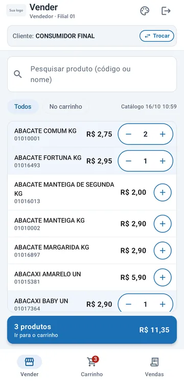

Hortifrúti e granel
Produto vendido por quilo ou litro, com quantidade fracionada no app e no caixa, e preço da tabela da filial sempre atualizado.
PDV para quem usa TOTVS Protheus
O Caixeiro tem um app Android para o vendedor e uma frente de caixa que roda no navegador. Catálogo, preços, clientes, estoque e documentos fiscais vêm do ERP que você já usa — a venda não é digitada duas vezes.


Para quem é
O Caixeiro não substitui o ERP nem guarda uma cópia paralela das vendas. Ele é a tela de venda; o cadastro, o fiscal e o financeiro continuam no Protheus.
Produto vendido por quilo ou litro, com quantidade fracionada no app e no caixa, e preço da tabela da filial sempre atualizado.
Vendedor atendendo no salão ou em campo com o histórico do cliente na mão, gerando orçamento ou pedido que o caixa finaliza.
Caixa operado pelo teclado, NFC-e emitida na hora, cupom na impressora térmica e o caixa do dia conferido no fim do expediente.
Caixeiro PDV · app Android
Escolhe o cliente, monta o carrinho com o catálogo da filial e finaliza no documento certo, sem voltar ao computador.
Busca por código ou nome, com o catálogo guardado no aparelho e sincronizado com o Protheus.
Quantidade fracionada para produtos vendidos a peso ou volume; inteira para os demais.
Desconto por item e no pedido, até o percentual máximo definido para cada aparelho.
Consumidor final ou cliente cadastrado, cadastro rápido de cliente novo, últimas compras e “copiar última compra”.
O documento é gerado no próprio Protheus; o cupom vai por e-mail ou é compartilhado em PDF.
Saldo do armazém configurado na lista e no item, com bloqueio opcional de venda sem estoque.
Também: vendas do dia, orçamentos em aberto e tema claro, escuro ou automático. A logo da sua empresa aparece nas telas e no comprovante.


Caixeiro Balcão · frente de caixa web
Nada para instalar no computador do caixa. Cada tela tem a sua tecla, a quantidade vai direto na busca e o total fica sempre à vista.
O vendedor grava o orçamento no app; o caixa abre a lista de orçamentos em aberto, confere e emite. O vendedor da venda é mantido.
O cupom é enviado em ESC/POS direto do Chrome para a impressora (USB ou serial), com segunda via a partir da lista de vendas.
Vendas do dia com vendedor, forma de pagamento e documento; cancelamento de NFC-e pela própria lista, dentro das regras do Protheus.
Caixa do dia e relatórios

Segurança e infraestrutura
App e Balcão falam com um gateway em nuvem (Cloudflare). É ele que conversa com o Protheus, e só com a API do Caixeiro.
O acesso ao REST do Protheus fica no gateway. Nem o app nem o navegador do caixa recebem essa senha.
O app e o Balcão têm endereços próprios, e cada acesso só vale no endereço do seu perfil: vendedor ou caixa.
Tentativas repetidas de acesso com código inválido são bloqueadas por um tempo.
Se a conexão cair no meio do envio, reenviar a mesma venda devolve o resultado já gravado, sem emitir a nota de novo.
Certificado digital, regras fiscais e numeração ficam no Protheus. O Caixeiro não emite nada por fora.
Cada vendedor ou caixa tem o seu código de acesso, com estação, série, caixa, armazém e limite de desconto definidos no ERP.
Implantação
Quantos vendedores e caixas, quais documentos emite, como o financeiro confere o dia.
Os fontes e a API do Caixeiro são compilados no seu ambiente, com as tabelas de apoio.
Cada aparelho ou caixa recebe o seu acesso, com estação, série, caixa, armazém e desconto máximo.
O app é instalado nos aparelhos, o Balcão abre no navegador do caixa e a virada é acompanhada de perto.
Conte como é a sua venda hoje: quantos vendedores, quantos caixas e quais documentos emite. A gente mostra como fica no Caixeiro.
contato@caixeiro.tec.br